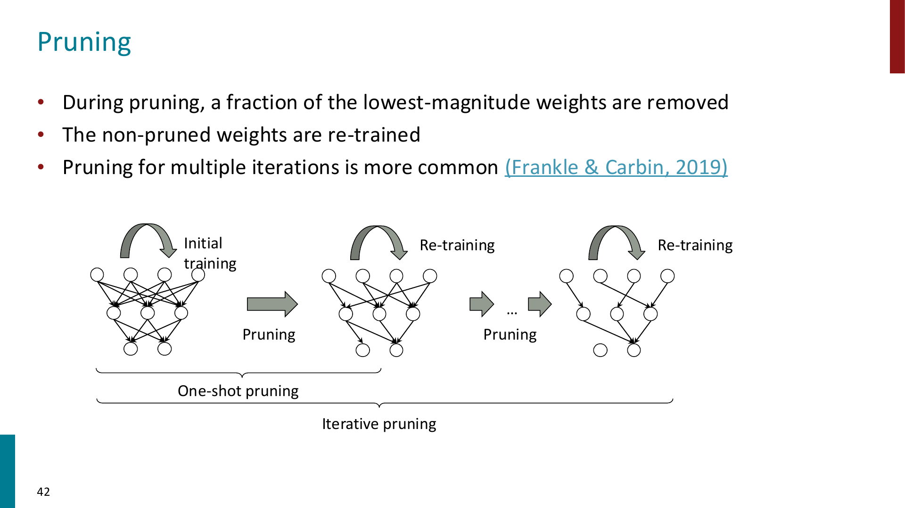
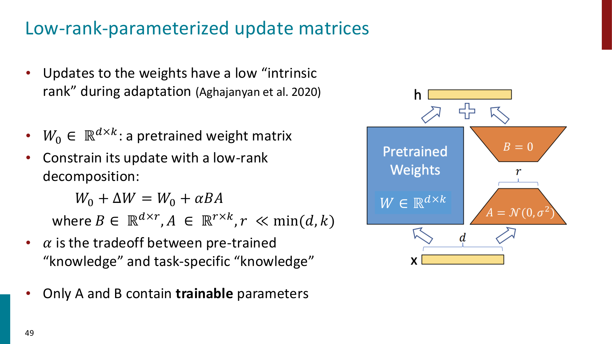
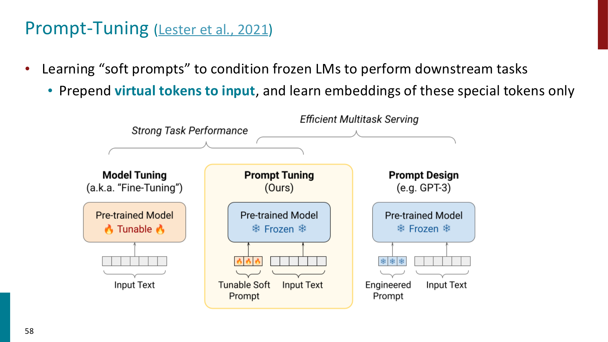
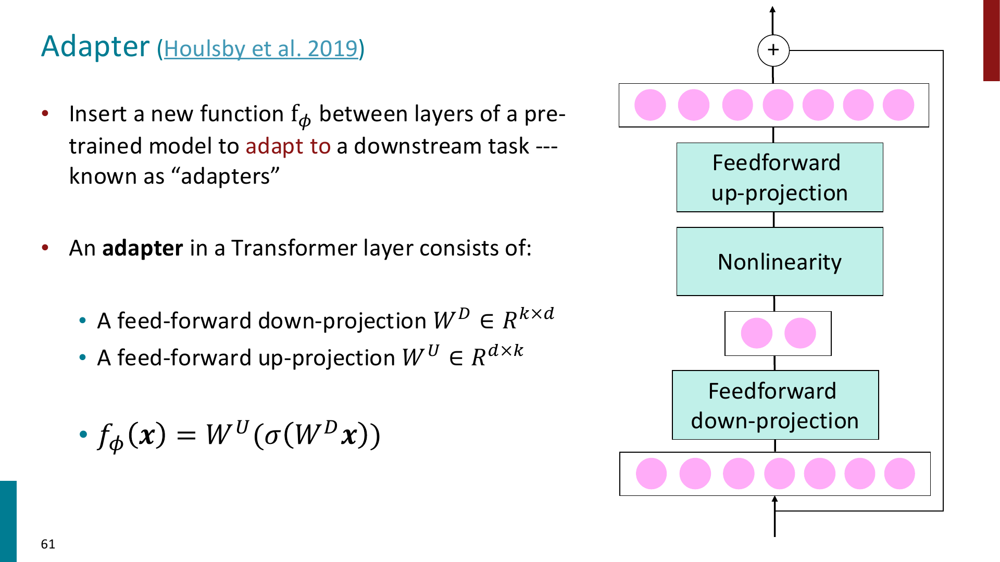
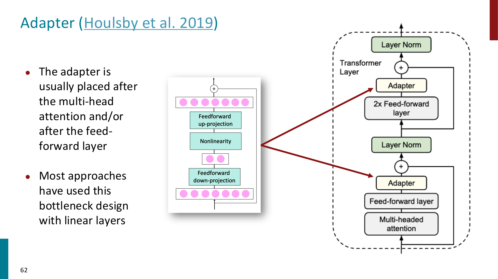
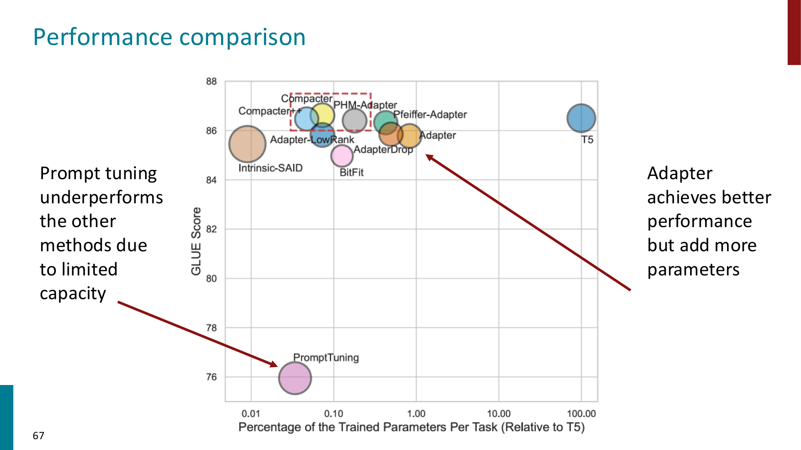

PEFT
PEFT 全称为 Parameter-Efficient Fine-Tuning
前面我们已经看到：
- pretraining 很贵，但可以训练出通用 base model
- posttraining 可以让模型更符合 instruction 和 human preferences
- full fine-tuning 可以把模型适配到具体任务
但当模型越来越大时，full fine-tuning 会变得越来越不现实
Important
Full fine-tuning: 更新模型的所有参数
PEFT: 冻结大部分 pretrained parameters，只训练一小部分 task-specific parameters
Prompting
在进入 PEFT 之前，课件先回顾了 prompting
Prompting 的核心思想是：不更新模型参数，只通过输入文本的设计，让模型把任务理解成一个 sequence prediction problem
常见 prompting 方式包括：
- Zero-shot prompting
- 只写任务说明，不给示例
- One-shot prompting
- 给一个输入输出示例
- Few-shot prompting
- 给多个输入输出示例，让模型在 context 里模仿任务格式
例如 few-shot translation：
这里模型没有发生 gradient update，只是根据 context 中的 pattern 继续生成
Tip
Prompting 和 finetuning 的区别：
- prompting: 改输入，不改参数
- finetuning: 用训练数据更新模型参数
Chain-of-thought prompting
一些复杂任务，尤其是 multi-step reasoning，只靠普通 prompt 可能不够
Chain-of-thought (CoT) prompting 的想法是：让模型先生成 reasoning steps，再生成最终答案
最简单的 zero-shot CoT prompt 是：
对于算术、数学文字题、逻辑推理等任务，CoT 可以把一个复杂问题拆成中间步骤，降低一次性预测最终答案的难度
Important
CoT 的作用不是显式改变模型参数，而是改变模型生成答案的路径。
它让模型先生成 intermediate reasoning，再基于 reasoning 得到 answer。
Downsides of prompt-based learning
Prompting 虽然方便，但也有明显缺点：
- Inefficiency
- prompt 每次 inference 都要被重新处理
- few-shot examples 会占用 context window
- Performance
- prompting 通常不如 task-specific finetuning 稳定
- Sensitivity
- 对 prompt wording, example order, formatting 都可能敏感
- Unclear learning mechanism
- 有时 random labels 也能产生一定效果（例如 sentiment analysis 中 few-shot prompt 随意给一些 sentiment label)，说明模型到底从 prompt 里学到了什么并不总是清楚
Tip
Prompt engineering 的本质是“用输入控制模型行为”，但这种控制不一定稳定、可解释或高效。
From fine-tuning to PEFT
Full fine-tuning 会更新所有模型参数，而对于一个大模型，如果每个 downstream task 都保存一份完整 fine-tuned checkpoint，会带来很高成本：
- 训练显存和计算成本高
- 每个任务都要保存完整模型副本
- 多任务部署困难
- 环境和能源成本高
- 开发门槛更集中在资源充足的组织
PEFT 的目标是：尽量只训练很少的参数，同时接近 full fine-tuning 的效果
可以把从三个视角理解 PEFT 的相关技术：
- Parameter perspective
- sparse subnetworks
- low-rank composition
- Input perspective
- prompt tuning
- prefix tuning
- Function perspective
- adapters
- task-specific modules
Sparse Subnetworks and Pruning
一种 PEFT 思路是：大模型参数很多，但不是所有参数对某个任务都同等重要
因此我们可以通过 pruning 找到一个 sparse subnetwork

Pruning 可以看成给参数加一个 binary mask：
如果 \(b_i=1\)，保留这个参数；如果 \(b_i=0\)，剪掉这个参数
对参数向量 \(\theta\)，pruned model 可以写成：
其中 \(\circ\) 是 element-wise product
最常见的 pruning criterion 是 weight magnitude
- 权重绝对值小，说明它可能不重要
- 先 prune 掉低 magnitude weights
- 然后 retrain 剩下的参数
Tip
Pruning 的直觉是：如果一个参数已经非常接近 0，那么把它变成 0 对模型输出的影响可能较小。
Lottery Ticket Hypothesis
Lottery Ticket Hypothesis 的核心观点是：
一个 dense randomly-initialized model 里可能已经包含一些 sparse subnetworks，这些 subnetworks 如果单独训练，也能达到和原模型接近的效果。
这些 subnetworks 被称为 winning tickets
在 pretrained models 中，也可以找到对特定任务有效的 sparse subnetwork
Important
Pruning / subnetwork 方法体现的是一种 sparsity inductive bias：
我们假设适配某个任务不一定需要更新整个 dense model，而可能只需要保留或调整其中一部分连接。
LoRA
LoRA 全称为 Low-Rank Adaptation
它是目前最常用的 PEFT 方法之一
先回顾 full fine-tuning
给定 pretrained model 参数 \(\phi_0\)，full fine-tuning 会学习一个完整的参数更新：
问题是：
如果模型有 175B 参数，那么每个任务都要学习并保存一个 175B 量级的参数更新，这非常昂贵
LoRA 的核心假设是：模型在 downstream adaptation 中真正需要的参数更新具有 low intrinsic rank
也就是说，不需要直接学习完整的 \(\Delta W\)，而是用低秩分解表示它

对于 pretrained weight matrix：
full fine-tuning 会学习：
LoRA 约束：
其中：
并且：
因此：
训练时：
- 冻结 \(W_0\)
- 只训练 \(A\) 和 \(B\)
- \(r\) 是 LoRA rank，控制 trainable parameters 数量
- \(\alpha\) 控制 task-specific update 的 scale
Important
LoRA 的关键节省来自低秩分解：
原本 \(\Delta W\) 需要 \(d\times k\) 个参数
LoRA 只需要 \(r(d+k)\) 个参数
当 \(r \ll d,k\) 时，参数量会小很多。
Why LoRA works?
LoRA 的直觉是：虽然模型参数空间非常大，但一个具体任务所需的 adaptation 可能只落在一个低维子空间里
因此我们不直接更新整个 matrix，而是只学习一个 low-rank update direction
LoRA 通常被加在 Transformer 的 attention projection matrices 上，例如：
- \(W_Q\)
- \(W_K\)
- \(W_V\)
- \(W_O\)
实际 forward 时可以写成：
推理时可以把 \(BA\) merge 回原矩阵：
因此 LoRA 可以做到几乎没有额外 inference latency
Tip
LoRA 的一个工程优势是：多个任务可以共享同一个 base model，只保存各自的小 LoRA weights。
切换任务时加载不同的 LoRA adapter 即可。
QLoRA
QLoRA 是 LoRA 的进一步内存优化
核心做法是：
- 把 base Transformer model quantize 到 4-bit precision
- 冻结 quantized base model
- 在上面训练 LoRA parameters
- 使用 paged optimizer 处理显存峰值
Important
LoRA 减少 trainable parameters
QLoRA 进一步减少 frozen base model 的 memory footprint
因此 QLoRA 让在较小硬件上 finetune 大模型变得更可行。
Prefix Tuning and Prompt Tuning
LoRA 是从 parameter matrix 的角度做 adaptation
另一类方法是从 input perspective 出发：不改模型主体，而是在输入前面加一些 learnable virtual tokens
Prefix Tuning
Prefix tuning 会学习一段 continuous task-specific prefix
这些 prefix 不是自然语言 token，而是可学习向量
模型主体参数冻结，训练时只更新 prefix parameters，包括输入层 embedding，attention 层的 prefix
可以理解成：
Tip
Prefix tuning 相当于给每个任务学一个“软提示”，这个提示不一定能被人类读懂，但模型可以利用它改变自己的行为。
Prompt Tuning
Prompt tuning 更直接：在输入前 prepend 一些 virtual tokens，只学习这些 virtual tokens 的 embeddings

和手写 prompt 的区别是：
- manual prompt 是离散文本，例如
Let's think step by step - prompt tuning 学到的是连续向量，不一定对应真实词
Important
Prompt tuning 的 trainable parameters 很少，但 capacity 也有限。
课件中提到，prompt tuning 往往在模型足够大时才效果更好。
Adapters
Adapters 是从 function perspective 做 adaptation
核心思想是：在 pretrained model 的层之间插入小的 task-specific modules，同时冻结原模型参数

一个典型 adapter 是 bottleneck 结构：
- Down-projection
- Nonlinearity
- Up-projection
设输入 hidden state 为：
down-projection：
up-projection：
其中 \(k \ll d\)
adapter function：
通常还会通过 residual connection 加回原 hidden state：

Adapters 通常插入在：
- multi-head attention 之后
- feed-forward layer 之后
- 或者两处都插入
Tip
Adapter 和 LoRA 的区别：
- LoRA 修改的是已有 weight matrix 的更新方式
- Adapter 是额外插入新的小模块
因此 adapter 可能带来一点 inference latency，而 LoRA merge 后通常没有额外延迟。
Comparing PEFT methods
不同 PEFT 方法的 tradeoff 不一样，大致可以这样理解：

- Prompt tuning
- 参数最少
- 部署灵活
- capacity 较低，性能可能弱
- Prefix tuning
- 比 prompt tuning 更强一些
- 仍然从 input side 控制模型
- LoRA
- 参数效率高
- 性能强
- 可以 merge，推理延迟低
- 实践中非常常用
- Adapters
- 表达能力较强
- 需要插入额外模块
- 可能增加推理开销
- Pruning / subnetworks
- 强调 sparsity
- 可以减少模型规模
- 训练和选择 mask 可能复杂
Important
PEFT 不是单一方法，而是一组 adaptation strategies。
它们共同目标是：用更少的 trainable parameters 接近 full fine-tuning 的效果。
A unified view
课件中提到，LoRA, prefix tuning, adapters 等方法可以从统一视角理解：
它们都在修改模型中间的 hidden representation
只不过修改方式不同：
- LoRA 通过 low-rank parameter update 间接改变 hidden states
- prompt / prefix tuning 通过 input-side virtual tokens 改变 hidden states
- adapters 通过额外 function module 改变 hidden states
- pruning 通过 sparse mask 改变可用参数子网络
因此可以把 PEFT 看成：
其中 \(\Delta h_{\text{task}}\) 由少量 task-specific parameters 控制
Other efficient adaptation methods
课件最后还提到一些其他方向：
- Knowledge distillation
- 用大模型作为 teacher，训练一个更小的 student model
- 目标是让 student 模仿 teacher 的输出或中间表示
- Gist tokens
- 学习把长 prompt 压缩到少量 tokens
- ReFT
- 在 representation 层面直接做 intervention / adaptation
这些方法的共同目标仍然是：降低 adaptation 和 deployment 成本
Summary of PEFT
可以把这一章的主线总结成：
- Prompting 不更新参数，只通过输入控制模型行为，但对 wording 和 examples 很敏感
- Chain-of-thought prompting 通过生成中间推理步骤改善 reasoning
- Full fine-tuning 对大模型成本很高，因此需要 parameter-efficient adaptation
- Pruning 用 binary mask 找 sparse subnetwork
- LoRA 冻结 pretrained weights，只训练 low-rank update matrices \(A,B\)
- QLoRA 在 LoRA 基础上量化 base model，进一步降低显存需求
- Prefix tuning / prompt tuning 学习 virtual tokens，从 input side 适配 frozen LM
- Adapters 在 Transformer 层中插入小的 bottleneck modules
- 不同 PEFT 方法在参数量、性能、推理延迟、部署灵活性之间有不同 tradeoff